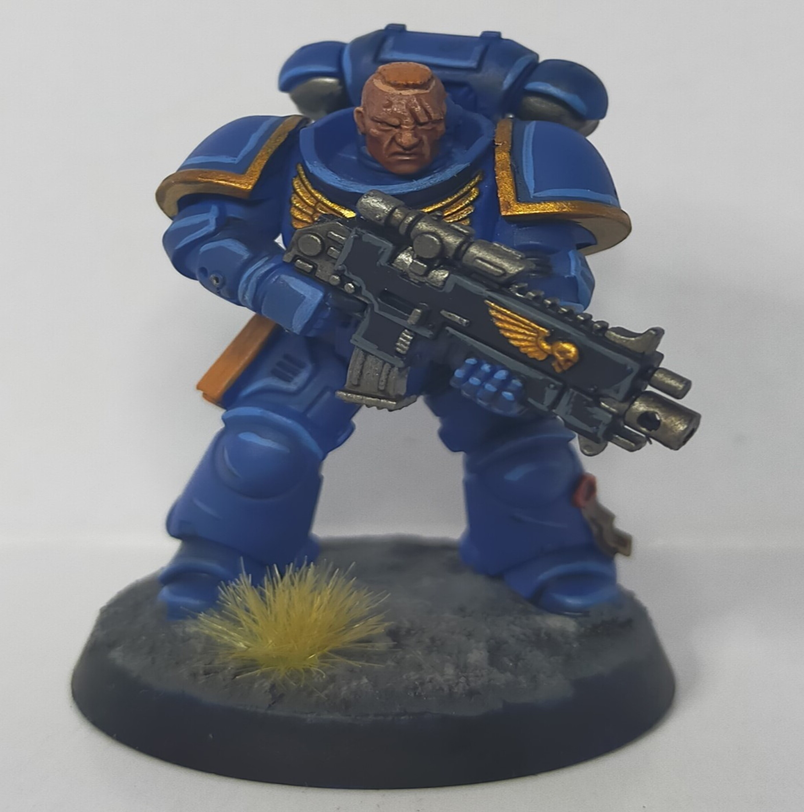
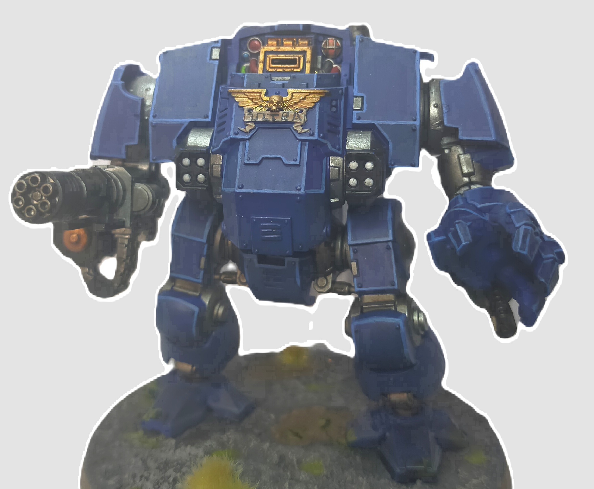

En esta pagina se muestran varias maquetas creadas por mi expuestas en forma de galer√≠a de imágenes. Todo ha sido pintado con pincel y aer√≥grafo.üñåÔ∏èüé®
Galería de Maquetas
Figura de soldado alemán de la Segunda Guerra Mundial
Marine Espacial de los Ultramarines Warhammer 40k
Única maqueta civil, se trata de un modelo de Land Rover
Marine espacial con estandarte
Teniente de los Ultramarines
Panzer II alemán de la Segunda Guerra Mundial
KV 1 soviético de la Segunda Guerra Mundial

Dreadnought de los Ultramarines
| Años de pintado | ||
|---|---|---|
| 2022 | 2023 | 2024 |
| Marine espacial | Dreadnought | Tanque soviético |
| Teniente marine espacial | Tanque alemán | Land Rover |
Hay varios tipos de maquetas expuestos:
- Vehiculos
- Civiles
- Militares
- Figuras
- Warhammer 40K
- Segunda Guerra Mundial
Más previsiones: Tiempo 25 días Madrid
©Samael González 2024